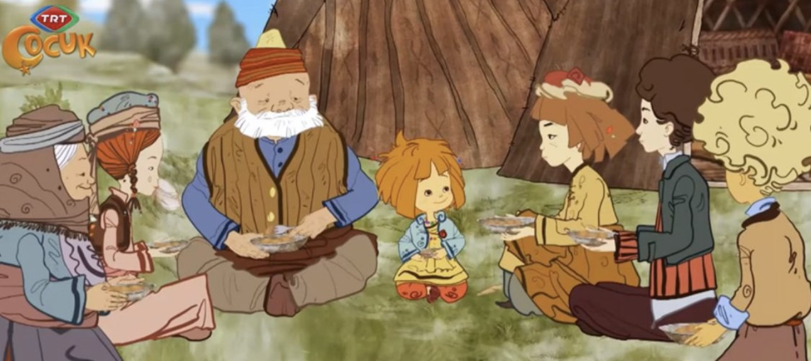

Maysa İle Bulut
Maysa İle Bulut çizgi filmi,Eskişehir'deki bir animasyon stüdyosu tarafından 5 aylık bir çalışma sonunda hazırlanmış Toroslardaki Akçaoba isimli hayali bir Yörük obasında yaşayan Yörüklerin çeşitli kültürel unsurlarla çevrelenmiş yaşantısını Maysa ve Bulut adındaki iki çocuk üzerinden anlatmaktadır.
Yörük kültürüne ait ögeleri samimi ve kendine has dinamikleriyle anlatan bu çizgi filmi izlemenizi tavsiye ederiz.